Kütüphanelerde .ali uzantılı bir dizi dosya bulunur.
Programdan bu dosyalardan biri seçildiğinde, aliymanlar içinde
tanımlanan stile göre etiketlenecektir. Herhangi bir hesaplama
yapıldığında, uygulama, kullanıcı eksenleri tasarlarken (geçici)
etiketleme verilerini görmesi için bu dosyalarda açıklanan
parametreleri kullanır.
İnteraktif düzenleyiciye erişmek için, Plan'ın sabit menüsünde
EDITAR.Ali komutuyla veya Etiketleme'de bir çağrı ile yer alacağız.
İnteraktif düzenleyiciye girdiğimizde, belirli bir .ali dosyasının
etiketlemesini istediğimiz gibi değiştirebilmek için farklı
komutlarıyla birlikte aşağıda gösterdiğimiz menüyle karşılaşacağız:
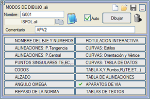
Not defteri tuşuyla, yüklediğimiz .ali dosyasını
tüm iç komutlarını görmek için düzenleyebiliriz. Ayrıca, aşağıda
göstereceğimiz farklı alt menülerin tüm değerlerini boş bir sayfa ile
gösterilen kutucuktan başlatabiliriz.

Not defteri
|

Verileri sıfırla
|
.ali dosyasını yükle |
.ali dosyasını kaydet |

İkinci veya üçüncü kütüphaneye kaydet |
.ali çizimini sil |

|
Düzenleyicinin
herhangi bir alt menüsünde, eksenimizin farklı KM'lerine dinamik olarak
konumlanmak için Bilgi Ekosu'nu kullanabiliriz.
|
Aşağıdaki verileri etiketleyebiliriz:
Eksen adı ve numaraları:
Bu seçenekler, eksen ve aliymanların adları ve numaralandırmasıyla ilgili her şeyi etiketlememize olanak tanır.
İSİM:
- Başlangıç: Plan sekmesinde tanımladığımız eksen adını başlangıcına etiketler.
- Bitiş: Plan sekmesinde tanımladığımız eksen adını sonuna etiketler.
- Orta: Plan sekmesinde tanımladığımız eksen adını orta kısmına etiketler.
- Geopak: Eksen adını
Geopak tarzında etiketlememize olanak tanır. Bunun için, Genel
sekmesinde takma ad 1 ve takma ad 2'yi tanımlamış olmamız, ayrıca bir
stil, bir boyut vermemiz ve takma adların adını yerleştirmek istediğimiz
aralığı belirlememiz zorunludur.
NUMARALAR:
- Eksen: Eksen numarasını (EKSEN 1, EKSEN 2...) etiketlemek için bir sembol (varsayılan S47) belirtir.
- Aliyman:
Aliymanların numaralandırmasını etiketlemek için bir sembol (varsayılan
S741) belirtir. Ayrıca bir boru hattı projesindeki her bir some
noktasının numarasını etiketlemeye de olanak tanır (örnek: CODOS3.ali).
- Veri:
Farklı aliymanların aliyman, klotoid, dairesel kurp numaralandırmasını
etiketlemek için bir sembol (varsayılan S371) belirtir.
Bu seçeneklerin her biri için, gerektiğinde şunları belirtebiliriz:
- Bir metin stili.
- Bir KM mesafesi
(etiketi eksen boyunca kaydırır).
- Bir eksene mesafe
(etiketi eksene dik olarak kaydırır).
- Bir açı.
- Bir metin boyutu.
- Yatay
hizalama modu (sola, sağa veya ortaya).
- Dikey
hizalama modu (üst, tepe, orta, taban veya alt).
- Açısal yönelim
modu: mutlak (varsayılan açı başlangıcını kullanır) veya eksene
göreceli (ekseni açı başlangıcı olarak kullanır).
Aliymanlar:
Teğet Noktası:
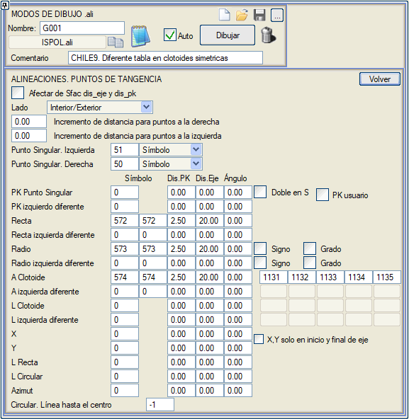
Bu
seçenekler, planın tekil KM'lerini ve bir dizi parametreyi
etiketlememize olanak tanır: yarıçaplar, parametreler ve klotoid
uzunlukları...
- Sfac, eksene mesafe ve KM mesafesinden etkilen: Etkinleştirildiğinde, sembollerin ölçek faktörüne (Sfac) eksene mesafe ve KM'lere mesafe açısından verdiğimiz herhangi bir değişikliği dikkate alacaktır.
- Taraf: İç/Dış (programın kurpların iç ve dış taraflarını otomatik olarak dikkate alarak etiketlemesine olanak tanır), Sağ
(tüm etiketleme sağ kenar boşluğunda olacaktır) ve Sol (tüm etiketleme sol
kenar boşluğunda olacaktır).
- Sağdaki noktalar için mesafe artışı: sağ kenar boşluğunun etiketlenmesi için eksene olan mesafeyi değiştirir.
- Soldaki noktalar için mesafe artışı: sol kenar boşluğunun etiketlenmesi için eksene olan mesafeyi değiştirir.
- Sol Tekil Nokta:
Eksenin solundaki tekil noktaları etiketleyeceği sembolü (varsayılan S51) veya hücreyi (varsayılan C51) belirtir.
- Sağ Tekil Nokta:
Aynısı, ancak eksenin sağındaki tekil noktalar için.
- Tekil Nokta KM'si:
Tekil noktalardaki KM'leri belirtilen sembolle (varsayılan S571) etiketler.
- S'de Çift kutucuğunu etkinleştirerek, S kurplarında KM'yi sağdan ve soldan etiketleyebiliriz.
- Kullanıcı
KM'si kutucuğunu etkinleştirerek, KM Denklemleri'nde tanımlanan kullanıcı KM'lerini kullanarak etiketleyebiliriz.
- Farklı sol KM:
Tekil noktalardaki KM'leri sol taraftan etiketlemek için ikinci bir sembol (önerilen S771) belirtir.
- Aliyman:
Aliymanların başlangıcını ve sonunu etiketlemek için bir sembol
(varsayılan S572) belirtir. Aliymanın başındaki sembol (birinci kutucuk)
ile sonundaki sembol (ikinci kutucuk) arasında ayrım yapabiliriz.
- Farklı sol aliyman:
Aliymanların başlangıcını ve sonunu sol taraftan etiketlemek için
ikinci bir sembol (önerilen S772) belirtir. Aliymanın başındaki sembol
(birinci kutucuk) ile sonundaki sembol (ikinci kutucuk) arasında ayrım
yapabiliriz.
- Yarıçap:
Yarıçap değerini etiketlemek için bir sembol (varsayılan S573) belirtir.
Aliymanın başındaki sembol (birinci kutucuk) ile sonundaki sembol
(ikinci kutucuk) arasında ayrım yapabiliriz.
- İşaret kutucuğunu etkinleştirerek, program sola kurplarda yarıçapa otomatik olarak negatif değer (R=-250) atayacaktır.
- Derece kutucuğunu etkinleştirerek, Plan sekmesinde dairesel kurbu derece ile tanımlamışsak, yarıçap yerine kurbun derecesini kullanarak etiketleyeceğiz.
- Farklı sol yarıçap:
Eksenin sol tarafındaki yarıçapı etiketlemek için ikinci bir sembol
(önerilen S773) belirtir. Aliymanın başındaki sembol (birinci kutucuk)
ile sonundaki sembol (ikinci kutucuk) arasında ayrım yapabiliriz.
- Klotoid A:
Klotoidin parametresini etiketlemek için bir sembol (varsayılan S574)
belirtir. Aliymanın başındaki sembol (birinci kutucuk) ile sonundaki
sembol (ikinci kutucuk) arasında ayrım yapabiliriz.
- Farklı sol A:
Klotoidin parametresini sol taraftan etiketlemek için ikinci bir sembol
(varsayılan S774) belirtir. Aliymanın başındaki sembol (birinci
kutucuk) ile sonundaki sembol (ikinci kutucuk) arasında ayrım
yapabiliriz.
- Klotoid L:
Klotoidin uzunluğunu etiketlemek için bir sembol (varsayılan S450) belirtir.
- Farklı sol L:
Klotoidin uzunluğunu sol taraftan etiketlemek için ikinci bir sembol (varsayılan S775) belirtir.
- X: Tekil noktanın X koordinatını etiketlemek için bir sembol belirtir.
- Y: Tekil noktanın Y koordinatını etiketlemek için bir sembol belirtir.
- X, Y sadece eksen başlangıç ve bitişinde kutucuğunu etkinleştirerek, X ve Y koordinatları sadece eksenin başlangıç ve bitiş noktalarında etiketlenir.
- Aliyman L: Aliymanın uzunluğunu etiketlemek için bir sembol belirtir.
- Dairesel L: Dairesel kurbun uzunluğunu etiketlemek için bir sembol belirtir.
- Azimut: Azimutu etiketlemek için bir sembol belirtir.
- Dairesel. Merkeze çizgi:
Dairesel aliymanlarda, teğet noktasından dairenin merkezine bir çizgi
çizmek için bir çizgi tipi belirtir. Örnek: espa4.ali.
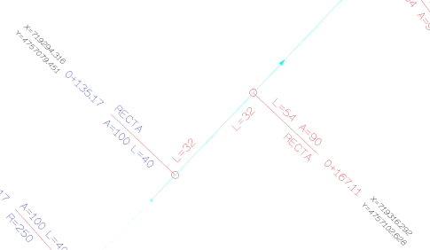
Aliymanlar:
Merkez Noktası:
Bu seçeneklerle, bir dizi parametreyi hangi sembollerle etiketleyeceğimizi seçebiliriz:
- Hücre (Dairesel):
Aliymanın merkez noktasına yerleştirilecek bir hücre belirtir.
Aliymanların orta noktasına yerleştirilen bu hücreden, aşağıda
tanımlayacağımız tüm semboller bağlanacaktır.
Örnek: ESPA1CEL_Inter.ali.
- 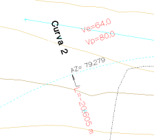Dış Mesafe
(Dairesel): Some noktasından yayın üzerindeki kurbun orta noktasına kadar olan mesafe.
- Azimut (Dairesel):
Dairesel kurbun orta noktasındaki azimutu.
- A (Klotoid):
Klotoid parametresi.
- Azimut (Aliyman):
Aliymanın azimutu.
- Uzunluk (Aliyman):
Aliyman bölümünün uzunluğu.
- Uzunluk (Dairesel):
Dairesel bölümün uzunluğu.
- Uzunluk (Klotoid):
Klotoid tarafından tanımlanan bölümün uzunluğu.
- PC=km (kurp başlangıcı):
Kurbun başlangıcındaki KM.
- PT=km (aliyman başlangıcı):
Aliymanın başlangıcındaki KM.
- Yarıçap (Dairesel):
Dairesel kurbun yarıçapı. Alternatif olarak, kurbun derecesini de etiketleyebiliriz.
- Ve (Dairesel):
Özel hız.
- Vp (Dairesel):
Proje hızı.
- Vd (Dairesel):
Tasarım hızı (kullanıcı hızı).
- Giriş Alt Teğeti:
Teğetlerin kesişim noktasından giriş kurbunun teğet noktasına kadar olan
mesafe.
- Çıkış Alt Teğeti:
Teğetlerin kesişim noktasından çıkış kurbunun teğet noktasına kadar olan
mesafe.
- Kurp Numarası:
Eksen kurplarının numaralandırılması.
- Aliyman Numarası: Aliymanların bağımsız numaralandırılması.
- Dairesel Kurp Numarası: Dairesel kurpların bağımsız numaralandırılması.
- Klotoid Numarası: Klotoidlerin bağımsız numaralandırılması.
- 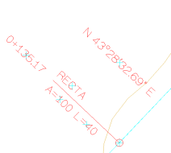Azimut
sex (Aliyman): Aliymandaki azimutun altmışlık derece cinsinden
etiketlenmesi. S(h)
seçeneği, başlangıcı Güney'e, saat yönünde yerleştirir.
- Azimut NE/NW/SE/SW sex
(Aliyman):
Bu dört kutucuğun hepsi, programın eksenin
yönelimine bağlı olarak aliymandaki ilgili azimutu yerleştirmesi için
sembolleriyle tanımlanmalıdır (sırasıyla S746/S747/S748/S749).
- Azimut NE/NW/SE/SW sex (Dairesel): Bu dört
kutucuğun hepsi, programın eksenin
yönelimine bağlı olarak her bir dairesel kurptaki ilgili azimutu
yerleştirmesi için sembolleriyle tanımlanmalıdır (sırasıyla
S746/S747/S748/S749).
- Omega cen Kurp:
Kurbun omega açısı (grad cinsinden). Kurbun giriş ve çıkış
kilometreleri arasındaki azimut farkının hesaplanması korunur, bu da bir
köşe noktasından kaynaklanan değişimi içerir.
- Omega sex Kurp:
Kurbun omega açısı (altmışlık derece cinsinden). Kurbun giriş ve çıkış
kilometreleri arasındaki azimut farkının hesaplanması korunur, bu da bir
köşe noktasından kaynaklanan değişimi içerir.
- Omega cen Dairesel:
Dairesel kurbun omega açısı (grad cinsinden). Boru hattı eksenleri
için, aliymanın sonunda bir köşe noktasının varlığından kaynaklanan açı
değişimini dikkate almaz. Sadece aliymanın kendi yayından kaynaklanan
açı değişim değerini verir.
- Omega sex Dairesel:
Dairesel kurbun omega açısı (altmışlık derece cinsinden). Boru hattı eksenleri için, aliymanın sonunda bir köşe noktasının varlığından kaynaklanan açı değişimini dikkate almaz. Sadece aliymanın kendi yayından kaynaklanan açı değişim değerini verir.
- Giriş Klo. Uzun. (Dairesel):
Giriş klotoidinin uzunluğu.
- Çıkış Klo. Uzun. (Dairesel):
Çıkış klotoidinin uzunluğu.
- İsim, Kurp:
Her kurptaki eksen adı.
- C 1004 (C Eksen Kurp):
Eksen numarası ve kurp numarası (Örn: C 1006)
Tekil noktalar: TE, EC...:
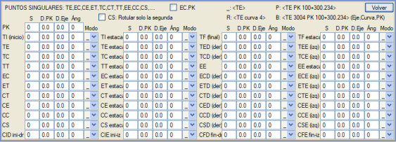
Teğet-Spiral
(TE), Spiral-Kurp (EC), Kurp-Spiral (CE), Spiral-Teğet (ET),
Teğet-Kurp (TC), Kurp-Teğet (CT),
Teğet-Teğet (TT), Spiral-Spiral (EE), C şeklinde Kurp-Kurp (CC),
S şeklinde Kurp-Kurp (CS)... gibi tekil noktaları hem KM formatında hem
de Brezilya projeleri için kesit formatında etiketlemeye olanak tanır.
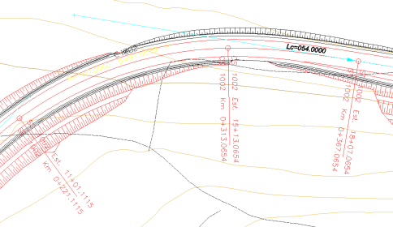
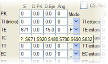İhtiyacımız
olan sembolü yerleştirmek için, program fareyi S (sembol) sütununun
üzerine getirdiğimizde bize bir sembol türü önerecektir.
Mod sütunuyla, seçtiğimiz sembolde ne göstermek istediğimizi belirtebiliriz:
- _
, KM veya kesiti dikkate almadan sembolü olduğu gibi göstereceği
anlamına gelir (ör: _ ile S832)
- P
, ayrıca KM veya kesiti etiketlemeye olanak tanır (ör: P ile S671)
- R
, ayrıca kurp numarasını etiketler (ör: R ile S690)
- B
, sembolün sahip olduğu metni artı eksen numarasını, ardından kurp
numarasını ve ilgili KM veya kesiti etiketler; bunun için uygun bir
sembol seçilmiş olmalıdır (ör: B ile S920).
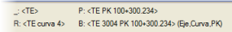
- CS:
Sadece ikincisini etiketle: Kurp-karşı kurp veya
kurp-kurp (CS, CC) durumlarında sadece ikinci kurbun numaralandırmasını etiketler.
KM
|
Tekil noktalardaki KM'yi etiketler
|
|
|
TI (başlangıç)
|
Aliymanların başlangıcındaki KM'yi etiketler
|
TI
kesit |
Aliymanların başlangıcındaki kesiti etiketler |
TE
|
Teğet-Spiral KM
|
TE
kesit |
Teğet-Spiral kesit |
TC
|
Teğet-Kurp KM
|
TC
kesit |
Teğet-Kurp kesit |
TT
|
Teğet-Teğet KM
|
TT
kesit |
Teğet-Teğet kesit |
EC
|
Spiral-Kurp KM
|
EC
kesit |
Spiral-Kurp kesit |
ET
|
Spiral-Teğet KM
|
ET
kesit |
Spiral-Teğet kesit |
CT
|
Kurp-Teğet KM
|
CT
kesit |
Kurp-Teğet kesit |
CE
|
Kurp-Spiral KM
|
CE
kesit |
Kurp-Spiral kesit |
CC
|
Kurp-Kurp KM
|
CC
kesit |
Kurp-Kurp kesit |
CS
|
Kurp-Karşı Kurp KM
|
CS
kesit |
Kurp-Karşı Kurp kesit |
CID baş-sağ
|
Sağa bir kurp olduğunda başlangıç kurp numarasını etiketler
|
CIE baş-sol
|
Sola bir kurp olduğunda başlangıç kurp numarasını etiketler
|
TF (bitiş)
|
Aliymanların sonundaki KM'yi etiketler |
TF kesit
|
Aliymanların sonundaki kesiti etiketler |
TED (sağ)
|
Sağa kurplarda Teğet-Spiral KM
|
TEE (sol)
|
Sola kurplarda Teğet-Spiral KM
|
TCD (sağ)
|
Sağa kurplarda Teğet-Kurp KM
|
TCE (sol)
|
Sola kurplarda Teğet-Kurp KM
|
EE
|
Spiral-Spiral KM. S şeklindeki klotoidlerde iki ET ve TE yerine tek bir ETE verisi etiketlemeye olanak tanır.
|
EE kesit
|
Spiral-Spiral
kesit. S şeklindeki klotoidlerde iki ET ve TE yerine tek bir ETE verisi etiketlemeye olanak tanır. |
ECD (sağ)
|
Sağa kurplarda Spiral-Kurp KM
|
ECE (sol)
|
Sola kurplarda Spiral-Kurp KM
|
ETD (sağ)
|
Sağa kurplarda Spiral-Teğet KM
|
ETE (sol)
|
Sola kurplarda Spiral-Teğet KM
|
CTD (sağ)
|
Sağa kurplarda Kurp-Teğet KM
|
CTE (sol)
|
Sola kurplarda Kurp-Teğet KM
|
CED (sağ)
|
Sağa kurplarda Kurp-Spiral KM
|
CEE (sol)
|
Sola kurplarda Kurp-Spiral KM
|
CCD (sağ)
|
Sağa kurplarda Kurp-Kurp KM
|
CCE (sol)
|
Sola kurplarda Kurp-Kurp KM
|
CSD (sağ)
|
S kurp KM, sağa kurbun etiketlenmesi
|
CSE (sol)
|
S kurp KM, sola kurbun etiketlenmesi
|
CFD bit-sağ
|
Sağa bir kurp olduğunda bitiş kurp numarasını etiketler
|
CFE bit-sol
|
Sola bir kurp olduğunda bitiş kurp numarasını etiketler
|
Dirsekler:
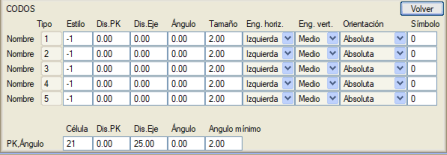
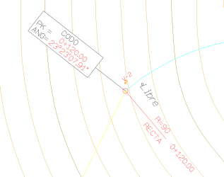
- İsim:
Plan menüsünde tanımladığımız dirsek tipini, Serbest, 45 dirsek, 90
dirsek... her birini ayrı ayrı, farklı bir metin stili kullanarak veya
istersek bir sembolle etiketlememize olanak tanır.
- KM, Açı:
Bir hücre (C21) aracılığıyla dirseğin KM'sini ve açısını etiketleyebiliriz.
Boykesit
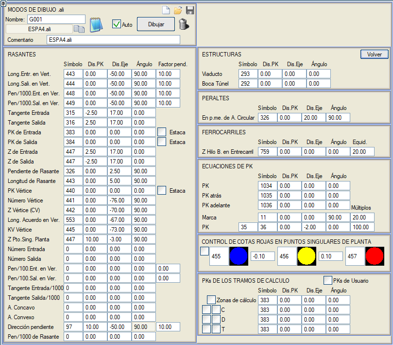
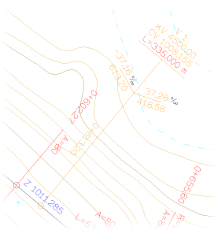
Bu alt menü aracılığıyla, boykesit ve kırmızı kotla ilgili her şeyi etiketleyeceğiz: kırmızı kot eğimleri, some giriş ve çıkış uzunlukları, kırmızı kot uzunlukları, deverler...
KIRMIZI KOTLAR:
Somede Giriş Uzun.
|
Someler arası giriş uzunluğu.
|
Somede Çıkış Uzun.
|
Someler arası çıkış uzunluğu.
|
Somede Giriş Eğ/1000.
|
Somedeki giriş eğimi, binde olarak.
|
Somede Çıkış Eğ/1000.
|
Somedeki çıkış eğimi, binde olarak.
|
Giriş Teğeti
|
Giriş teğetindeki eğim değeri.
|
Çıkış Teğeti
|
Çıkış teğetindeki eğim değeri.
|
Giriş KM'si
|
Giriş teğetindeki KM değeri. Kesit kutucuğunu etkinleştirerek kesiti etiketler. |
Çıkış KM'si
|
Çıkış teğetindeki KM değeri. Kesit kutucuğunu etkinleştirerek kesiti etiketler. |
Giriş Z'si
|
Giriş teğetindeki kot.
|
Çıkış Z'si
|
Çıkış teğetindeki kot.
|
Kırmızı Kot Eğimi
|
Kırmızı kotun eğimi.
|
Kırmızı Kot Uzunluğu
|
Kırmızı kotun uzunluğu.
|
Some KM'si
|
Somedeki KM. Kesit kutucuğunu etkinleştirerek kesiti etiketler. |
Some Numarası
|
Düşey kurp somelerinin numaralandırılması.
|
Some Z'si (DK)
|
Somedeki kot.
|
Somedeki D. Kurp Uzun.
|
Somedeki düşey kurp uzunluğu.
|
Some KV
|
Somedeki düşey kurp KV değeri.
|
Plan Tekil Nok. Z
|
Plan güzergahının tekil noktalarının kotu.
|
Giriş Numarası
|
Girişteki some (düşey kurp) numarası.
|
Çıkış Numarası
|
Çıkıştaki some (düşey kurp) numarası.
|
Somede Giriş Eğ/100.
|
Some pozisyonuyla ilişkili düşey kurbun giriş eğimi, yüzde olarak.
|
Somede Çıkış Eğ/100.
|
Some pozisyonuyla ilişkili düşey kurbun çıkış eğimi, yüzde olarak. |
Giriş Teğeti/1000
|
Giriş teğetindeki eğim, binde olarak (demiryolu projeleri).
|
Çıkış Teğeti/1000
|
Çıkış teğetindeki eğim, binde olarak (demiryolu projeleri). |
Dere kurp
|
Dere kurplarını tanımlamak için bir sembol çizer (örneğin S1032).
|
Tepe kurp
|
Tepe kurplarını tanımlamak için bir sembol çizer (örneğin S1033). |
Eğim yönü
|
Eğimin yönünü gösteren bir sembol çizer.
|
Kırmızı Kot Eğimi/1000
|
Kırmızı kotun eğimi, binde olarak.
|
| Düşey Kurbun Dış Teğeti |
Düşey kurbun dış teğeti. |
SANAT YAPILARI:
DEVERLER:
Dairesel A. Merkez Nok.
|
Dairesel aliymanın orta noktasındaki dever.
|
DEMİRYOLLARI:
Hat Aralığında Alçak Ray Z
|
Hat aralığındaki alçak rayın kotu.
|
KM DENKLEMLERİ:
KM
|
KM denklemlerinde tanımlanan KM değeri
|
Geri KM
|
Geri KM'nin etiketlenmesi.
|
İleri KM
|
İleri KM'nin etiketlenmesi.
|
İşaret
|
Atanan bir katdan bir işaret çizer.
|
KM
|
Atanan kattan KM denklemlerinde tanımlanan KM değeri.
|
PLANDAKİ TEKİL NOKTALARDA KIRMIZI KOT KONTROLÜ:
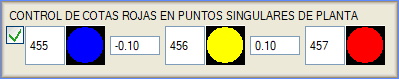
Bu seçenek, planın tekil noktalarındaki kırmızı kotları tanımlayan üç
sembol ve iki değer tanımlamaya olanak tanır. Örneğin, varsayılan
değerlerle (semboller S455, S456 ve S457; değerler -0.10 ve 0.10),
kırmızı kotu -0.10 m'den küçük olan tekil noktaların üzerine mavi bir
nokta, kırmızı kotu -0.10 m ile 0.10 m arasında olan noktaların üzerine
sarı bir nokta ve kırmızı kotu 0.10 m'den büyük olan tekil noktaların
üzerine kırmızı bir nokta çizilecektir.
HESAP BÖLGELERİNİN KM'LERİ.
Genel
hesaplama bölümlerinin ve/veya Hendekler, Yarmalar veya Dolgular
uygulama bölümlerinin başlangıç ve bitiş KM'lerini planda etiketlemeye
olanak tanır.
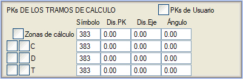
Omega
Açısı:
Bu
seçeneklerle planın açılarını kontrol edebiliriz. Bu, plan
tasarımına bir yardımcıdır. Planın sabit menüsünden, yan menüdeki Tasarım > Omega
veya Omega Dairesel seçeneğinden etiketlemeden bu aynı kontrolleri yapabiliriz.
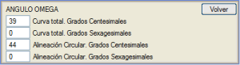
- Toplam
Kurp. Grad: Plandaki tüm kurbun (dairesel artı klotoidler) omega açısını grad cinsinden etiketlemeye olanak tanır.
- Toplam Kurp. Derece: Plandaki tüm kurbun (dairesel artı klotoidler) omega açısını altmışlık derece cinsinden etiketlemeye olanak tanır.
- Dairesel Aliyman.
Grad:
Klotoidler arasındaki dairesel kurbun omega açısını (varsa) grad cinsinden etiketlemeye olanak tanır.
- Dairesel Aliyman.
Derece:
Klotoidler arasındaki dairesel kurbun omega açısını (varsa) altmışlık derece cinsinden etiketlemeye olanak tanır.
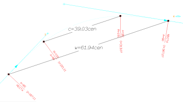
İnteraktif Etiketleme
Bu komutlardan yola çıkarak, her aliyman tipi için, ALİYMAN, DAİRESEL KURP veya KLOTOİD
olmasına bağlı olarak, bir başlık hücresi tanımlanır ve bu hücrenin
yönelimine bağlı olarak, ekteki
resimde gördüğümüz parametreleri (Eksen Numarası, Aliyman, KM, Uzunluk...) etiketleyebiliriz.
Kırmızı kot ve arazi kotunu etiketleme imkanı.
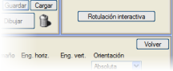Bu menüde, farklı
parametreleri tanımladıktan sonra İnteraktif etiketleme komutunu
kullanabiliriz; bu komutla program, ekseni seçmemizi isteyecek ve
ekranda, aliyman tipine göre etiketlenecek farklı noktalara tıklamamıza
izin verecektir. ESC tuşuyla interaktif etiketlemeden çıkacağız.
Etiketlendikten sonra, diğer bilgileri de sürükleyen hücrenin noktası
taşınabilir veya döndürülebilir.
İnteraktif etiketleme kutucuğu, Aliymanlar sekmesi içindeki Etiketleme menüsünde de bulunur.
Eğer Tüm aliymanları merkez KM'sinde etiketle'yi
etkinleştirirsek, Aliyman/Dairesel Kurp/Klotoid'de belirtilen seçenekler,
her bir aliymanı orta noktasında, bitişik kutucukta tanımlanan eksene
bir mesafede etiketlemek için kullanılacaktır.
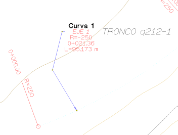
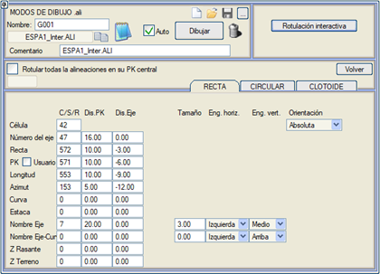
Etiketlenen KM'lerin,
KM denklemlerinden türetilen kullanıcı KM'leri olma seçeneğimiz vardır.
Örnek olarak ESPA1_Inter.ali, ESPA1CEL_Inter.ali
dosyalarına başvurulabilir; bu dosyalarda, planda KM, uzunluk, azimut...
gibi ilişkili bilgilere sahip bir dizi hücre etiketlenecektir. Harita
düzenleyicisinden, planda etiketlendikten sonra, hücrenin bir tutamacını
seçerek konumunu ve ona bağlı metinleri yeniden yerleştirmek mümkün
olacaktır.
Kurplar:
Stiller:
Etiketleme stilini ülkeye göre belirleriz. Bu menüyü temel olarak,
etiketlememizde saatler, tablolar isteyip istemediğimize karar vermek
için kullanırız veya tam tersi, herhangi bir tablo veya saat
etiketlemeye ihtiyacımız yoksa, bu durumda Genel seçeneğini kullanırız.
Sadece Şili, Şili M.O.P, Guatemala, El Salvador ve Portekiz modları,
aşağıda göreceğimiz gibi bir sayfalama veya alt sayfalama yükleme ve
böylece saatleri ve tabloları buna göre yönlendirme imkanını etkiler.
Kurplar: Yönelim ve Some:
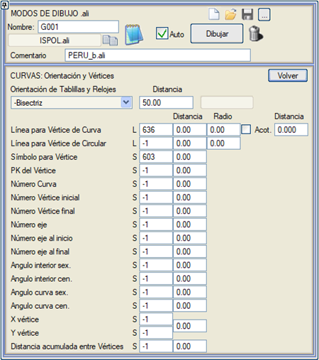
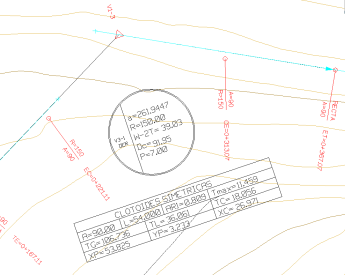
- Tablo ve Saatlerin
Yönelimi: Tablolu bir stil tanımladığımız tüm etiketleme
modlarında KURPLAR: Stiller içinde bir yönelim belirtebiliriz: Sor,
Kuzey, Açıortay, Alt Sayfa, Sayfa, -Açıortay, Matris ve Yatay Matris.
Yönelim Sayfa olduğunda, bu
tablonun some ile ilişkili verileri de sayfanın aynı açısıyla
yönlendirilir.
 Kurp Somesi için Çizgi:
Kurbun teğetinden somesine çizeceği çoklu çizgiye vereceğimiz çizgi
stilini belirtir. Ayrıca, (bitişik kutucuğu etkinleştirerek) kurp some
çizgilerini ölçülendirebilir, ayrıca ölçülendirme metnini ayırmak için
bir mesafe de belirtebiliriz. Ölçülendirme stili, Ölçülendirmeler araç çubuğunda bulunan Ölçü Stili seçeneğinden değiştirilebilir. Kurp Somesi için Çizgi:
Kurbun teğetinden somesine çizeceği çoklu çizgiye vereceğimiz çizgi
stilini belirtir. Ayrıca, (bitişik kutucuğu etkinleştirerek) kurp some
çizgilerini ölçülendirebilir, ayrıca ölçülendirme metnini ayırmak için
bir mesafe de belirtebiliriz. Ölçülendirme stili, Ölçülendirmeler araç çubuğunda bulunan Ölçü Stili seçeneğinden değiştirilebilir.
- Dairesel Some için
Çizgi:
Dairesel (klotoid) teğetinden somesine çizeceği çoklu çizgiye
vereceğimiz çizgi stilini belirtir.
Kurbun somesini ve dairesel
aliymanın somesini temsil eden çizgiler için, someye bir mesafe ve iç
açıyı işaretlemek için mm cinsinden bir yarıçap belirtebiliriz.
- Some için Sembol:
Some konumundaki sembol.
- Some KM'si:
Kurpların somesinin KM'sini etiketler.
- Kurp Numarası:
Kurbun numarasını etiketler.
- Başlangıç Some Numarası:
Eksenin başlangıç somesini kurp numaralandırmasının başlangıcı olarak
etiketler.
- Bitiş Some Numarası:
Eksenin bitiş somesini kurp numaralandırmasının sonu olarak etiketler.
- Eksen numarası: Kurplardaki eksen numarasını etiketler.
- Başlangıçtaki eksen numarası:
Eksenin başlangıcındaki eksen numarasını etiketler.
- Sondaki eksen numarası:
Eksenin sonundaki eksen numarasını etiketler.
- İç açı sex.:
Dairesel kurbun açısı (altmışlık derece cinsinden).
- İç açı cen.:
Dairesel kurbun açısı (grad cinsinden).
- Kurp açısı sex.:
Kurbun açısı (altmışlık derece cinsinden).
- Kurp açısı cen.:
Kurbun açısı (grad cinsinden).
- X some:
Somenin X koordinatı.
- Y some:
Somenin Y koordinatı.
- Someler arası birikimli
mesafe.
Kurplar:
Veri Tablosu:

- Tablo ve Saatlerin
Yönelimi: Sor, Kuzey, Açıortay, Alt Sayfa,
Sayfa, -Açıortay, Matris.
- Referans:
- 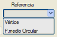Some: Tabloları veya
saatleri kurbun somelerine yerleştirir.
- Dairesel Orta Nok.:
Tabloları veya saatleri eksen içindeki dairesel kurbun orta noktasına
yerleştirir.
Matris yönelimi durumunda, bir
dikey kaydırma dY farklı klotoidsiz kurp tablolarında kullanılabilir:
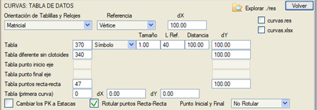
Başlangıç ve bitiş noktası da farklı bir tabloyla ve eğer yönelim
matris ise farklı bir dY ile etiketlenebilir. Bu durumda, klotoidsiz
kurplar yerine kendi tabloları kullanıldığında, dahil edilen veriler
listenin sonuna eklenen komutlarla tanımlanmalıdır: Başlangıç Noktası:
Kuzey, Doğu, Kot, KM, Azimut, Bitiş Noktası: Kuzey, Doğu, Kot, KM ve
Azimut.
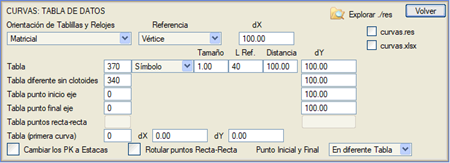
Bu son durumun bir örneğini Venezuela dış kütüphanesinde VENEZ_a.ali tablosuyla bulabiliriz:
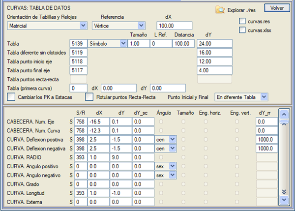
TE, ET kurp başlangıç ve bitiş noktası bayrağını etkinleştirerek, TE ve ET noktalarını kullanırken,
örneğin C şeklindeki kurplarda veya klotoidsiz kurplarda, aliyman veya
klotoid olmasa bile kurpların başlangıç ve bitiş noktasını da alması
mümkündür.
Aliyman-aliyman noktalarının etiketlenmesi
etkinleştirildiğinde, verilerini çerçevelemek için farklı bir sembol
tanımlanabilir. Aliyman-aliyman noktalarında sadece şunlar
etiketlenebilir: eksen adı, kurp numarası, pozitif ve negatif sapma
açısı, km. Ayrıca bu durumda dönüş yönünü [SAĞ] veya [SOL] olarak
etiketleme imkanı da vardır. Bu durumlarda, dy_rr konumuna bir ekleme
kullanma imkanımız vardır, çünkü aynı veri, kurplu bir tabloda kurpsuz
bir tablodakinden farklı bir yükseklikte yer alabilir. Kütüphaneye,
aliyman-aliyman noktalarındaki verileri çerçevelemek için farklı bir
sembol (S1438) kullanan TD_Recta_Recta.ali dosyası dahil edilmiştir.
Aliyman-Aliyman Noktaları tablolarına yerleştirilebilecek değerlere, DY_rr=1000 değeri koyarsak, sadece aliyman-aliyman tablolarında etiketlenirler. Bu, aliymanlar dairesel veya klotoidli olduğunda bu değerlerin etiketlemede çakışmamasını sağlar.

Eğer dY_cs değeri (klotoidsiz kurplar için dY) dY:sc = 1000 olarak atanırsa, o zaman değer sadece klotoidli kurplarda etiketlenir.
Açı: Kurbun sapma açısı tamamlayıcı olarak etiketlenebilir. (Örn: C_cen sağa = 202 ve C_cen sola = 198.)
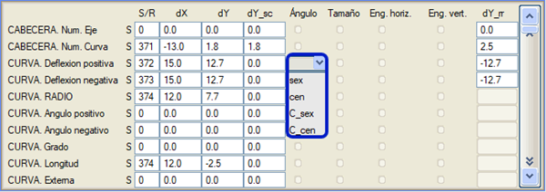
Someler arası mesafeyi
etiketleme imkanı.
Bir kurpla ilişkilendirilen, bir önceki someden olan mesafedir. İlk
kurp için başlangıca olan mesafe verilir. Ve eğer başlangıç noktası
etiketlenirse, bu noktada mesafe 0 verilir.
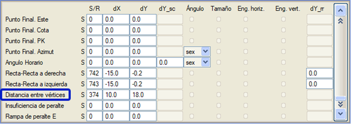
PI'yi etiketleme imkanı (KM= kurbun giriş KM'si + giriş teğeti):
Etiketlenecek diğer parametreler: Uzun parametresi, dairesel aliyman uzunluğu artı klotoidlerin uzunluklarının yarısının toplamıdır:
Uzun = Klo/2+Daire+Klo2
Giriş_Teğeti-Klo/2
Çıkış_Teğeti-Klo/2
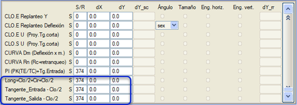
Kurpların veri tablosunu çizerken, tablodaki etkin verilerin .res
ve/veya .xlsx listelerinin oluşturulması etkinleştirilebilir. .ali
dosyası oluşturulduktan sonra, eksen her yeniden çizildiğinde some
noktalarındaki tablolarla birlikte liste oluşturulabilir. Tüm aktif
eksenlerle bir liste oluşturmanın bir yolu, örneğin: Plan >
Tasarım > Someler'dir. (Unutmayın, Yapılandırma->Tercihler->Listeler'de
Listeleme bittiğinde ızgarayı kapat seçeneğini devre dışı bırakarak
bilgileri Istram veri ızgarasında da tutabilirsiniz.)
Bu listelerde, her kurbun giriş klotoidi ve çıkış klotoidi numarasını dahil etme imkanımız vardır.
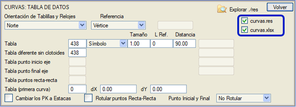
Değerleri etiketleme imkanı:
- VAnc G ve
VAnc Ç: Kurbun girişinde ve çıkışında kompanse edilmemiş ivmenin
değişimi.
- Vmin:
Zorunlu minimum hız veya maksimum dever fazlalığına bağlı olarak.
- He :
Dever fazlalığı. Zorunlu minimum hız yoksa, maksimum dever
fazlalığıdır.
Diğer değerler arasında şunlar etiketlenebilir:
- 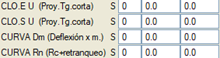Giriş ve çıkış klotoidlerinin U'su (kısa teğetin izdüşümü),
- Dm (Metre başına sapma = Gc x
1,5) ve
- Rn (Kurbun nominal yarıçapı =
Rc + geri çekilme).
Klotoidlerin yerel aplikasyonu için veri etiketleme imkanı:
- Uzunluk, X,Y,Sapma,
ayrıca uzunluk için bir enkesit aralığı ve satırlar için bir dikey kaydırma vererek.
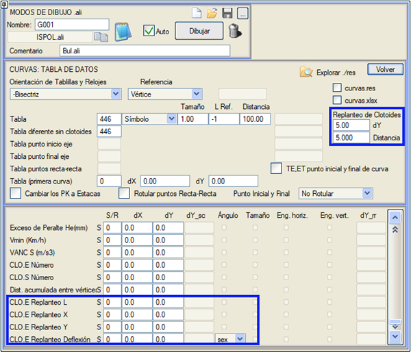
Başlangıç ve bitiş noktasındaki yarıçapı ve
eğimi etiketleme imkanı.
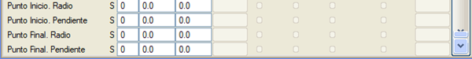
Aliyman-aliyman
noktaları tablolarında, klotoidsiz kurp tablolarından farklı bir dY
kullanma imkanı vardır. Bu durumda, kurplu bir tabloda aynı veri,
kurpsuz bir tablodakinden farklı bir yükseklikte yer alabilir.
Kütüphaneye, aliyman-aliyman noktalarındaki verileri çerçevelemek için
farklı bir sembol (S1438) kullanan TD_Recta_Recta.ali dosyası dahil
edilmiştir.
dY_cs değeri (klotoidsiz kurplar için dY) dY:sc = 1000 olarak atanırsa, o zaman değer sadece klotoidli kurplarda etiketlenir.
Açı: Kurbun sapma açısı tamamlayıcı olarak etiketlenebilir. (Örn: C_cen sağa = 202 ve C_cen sola = 198.)
Someler arası mesafeyi
etiketleme imkanı.
Bir kurpla ilişkilendirilen, bir önceki someden olan mesafedir. İlk
kurp için başlangıca olan mesafe verilir. Ve eğer başlangıç noktası
etiketlenirse, bu noktada mesafe 0 verilir.
PI'yi etiketleme imkanı (KM= kurbun giriş KM'si + giriş teğeti):
Etiketlenecek diğer parametreler: Uzun parametresi, dairesel aliyman uzunluğu artı klotoidlerin uzunluklarının yarısının toplamıdır:
Uzun = Klo/2+Daire+Klo2
Giriş_Teğeti-Klo/2
Çıkış_Teğeti-Klo/2
Kurpların veri tablosunu çizerken, tablodaki etkin verilerin .res
ve/veya .xlsx listelerinin oluşturulması etkinleştirilebilir. .ali
dosyası oluşturulduktan sonra, eksen her yeniden çizildiğinde some
noktalarındaki tablolarla birlikte liste oluşturulabilir. Tüm aktif
eksenlerle bir liste oluşturmanın bir yolu, örneğin: Plan >
Tasarım > Someler'dir. (Unutmayın, Yapılandırma->Tercihler->Listeler'de
Listeleme bittiğinde ızgarayı kapat seçeneğini devre dışı bırakarak
bilgileri Istram veri ızgarasında da tutabilirsiniz.)
Bu listelerde, her kurbun giriş klotoidi ve çıkış klotoidi numarasını dahil etme imkanımız vardır.
Değerleri etiketleme imkanı:
- VAnc G ve
VAnc Ç: Kurbun girişinde ve çıkışında kompanse edilmemiş ivmenin
değişimi.
- Vmin:
Zorunlu minimum hız veya maksimum dever fazlalığına bağlı olarak.
- He :
Dever fazlalığı. Zorunlu minimum hız yoksa, maksimum dever
fazlalığıdır.
Diğer değerler arasında şunlar etiketlenebilir:
- Giriş ve çıkış klotoidlerinin U'su (kısa teğetin izdüşümü),
- Dm (Metre başına sapma = Gc x
1,5) ve
- Rn (Kurbun nominal yarıçapı =
Rc + geri çekilme).
Klotoidlerin yerel aplikasyonu için veri etiketleme imkanı:
- Uzunluk, X,Y,Sapma,
ayrıca uzunluk için bir enkesit aralığı ve satırlar için bir dikey kaydırma vererek.
Başlangıç ve bitiş noktasındaki yarıçap ve
eğimi etiketleme imkanı.
Aliyman-aliyman
noktaları tablolarında, klotoidsiz kurp tablolarından farklı bir dY
kullanma imkanı vardır. Bu durumda, kurplu bir tabloda aynı veri,
kurpsuz bir tablodakinden farklı bir yükseklikte yer alabilir.
Kütüphaneye, aliyman-aliyman noktalarındaki verileri çerçevelemek için
farklı bir sembol (S1438) kullanan TD_Recta_Recta.ali dosyası dahil
edilmiştir.
dY_cs değeri (klotoidsiz kurplar için dY) dY:sc = 1000 olarak atanırsa, o zaman değer sadece klotoidli kurplarda etiketlenir.
Açı: Kurbun sapma açısı tamamlayıcı olarak etiketlenebilir. (Örn: C_cen sağa = 202 ve C_cen sola = 198.)
Someler arası mesafeyi
etiketleme imkanı.
Bir kurpla ilişkilendirilen, bir önceki someden olan mesafedir. İlk
kurp için başlangıca olan mesafe verilir. Ve eğer başlangıç noktası
etiketlenirse, bu noktada mesafe 0 verilir.
PI'yi etiketleme imkanı (KM= kurbun giriş KM'si + giriş teğeti):
Etiketlenecek diğer parametreler: Uzun parametresi, dairesel aliyman uzunluğu artı klotoidlerin uzunluklarının yarısının toplamıdır:
Uzun = Klo/2+Daire+Klo2
Giriş_Teğeti-Klo/2
Çıkış_Teğeti-Klo/2
Kurpların veri tablosunu çizerken, tablodaki etkin verilerin .res
ve/veya .xlsx listelerinin oluşturulması etkinleştirilebilir. .ali
dosyası oluşturulduktan sonra, eksen her yeniden çizildiğinde some
noktalarındaki tablolarla birlikte liste oluşturulabilir. Tüm aktif
eksenlerle bir liste oluşturmanın bir yolu, örneğin: Plan >
Tasarım > Someler'dir. (Unutmayın, Yapılandırma->Tercihler->Listeler'de
Listeleme bittiğinde ızgarayı kapat seçeneğini devre dışı bırakarak
bilgileri Istram veri ızgarasında da tutabilirsiniz.)
Bu listelerde, her kurbun giriş klotoidi ve çıkış klotoidi numarasını dahil etme imkanımız vardır.
Değerleri etiketleme imkanı:
- VAnc G ve
VAnc Ç: Kurbun girişinde ve çıkışında kompanse edilmemiş ivmenin
değişimi.
- Vmin:
Zorunlu minimum hız veya maksimum dever fazlalığına bağlı olarak.
- He :
Dever fazlalığı. Zorunlu minimum hız yoksa, maksimum dever
fazlalığıdır.
Diğer değerler arasında şunlar etiketlenebilir:
- Giriş ve çıkış klotoidlerinin U'su (kısa teğetin izdüşümü),
- Dm (Metre başına sapma = Gc x
1,5) ve
- Rn (Kurbun nominal yarıçapı =
Rc + geri çekilme).
Klotoidlerin yerel aplikasyonu için veri etiketleme imkanı:
- Uzunluk, X,Y,Sapma,
ayrıca uzunluk için bir enkesit aralığı ve satırlar için bir dikey kaydırma vererek.
Başlangıç ve bitiş noktasındaki yarıçapı ve
eğimi etiketleme imkanı.
Aliyman-aliyman
noktaları tablolarında, klotoidsiz kurp tablolarından farklı bir dY
kullanma imkanı vardır. Bu durumda, kurplu bir tabloda aynı veri,
kurpsuz bir tablodakinden farklı bir yükseklikte yer alabilir.
Kütüphaneye, aliyman-aliyman noktalarındaki verileri çerçevelemek için
farklı bir sembol (S1438) kullanan TD_Recta_Recta.ali dosyası dahil
edilmiştir.
X,
Y, Semt, R, (TE, ET...) Tablosu:
Bu tabloyu etiketleyebilmek için yönelimin Sayfa olması gerekir
(Kurplar: Yönelim ve Some adlı önceki bir menüde bulunur).
Öte yandan, Puntos singulares: TE, EC; CE... ile ilgili menüde TE, TC...
noktalarını etiketlememiz gerekir ve tabloyu etiketleyemeyeceğimiz için
genel bir stile (Kurplar: Stiller) sahip olamayız.

Aliymanlar tablosu:
Plandaki aliymanların bir veri tablosunu (Başlık sekmesi) tanımlayabiliriz, örneğin:
Aliyman numarası, Tip, KM, Uzunluk, X teğet, Y teğet,
Azimut (grad, altmışlık veya kuadrant), X merkez/i, Y merkez/i, Yarıçap, Parametre, Kurp yönü
(sağ/sol), Dairesel kurbun alt teğeti, Klotoidlerin uzun ve
kısa teğeti, Kurbun dış mesafesi, Kurbun some PI'sinin KM'si, Her
aliymanın (aliyman, daire veya klotoid) bitiş KM'si,
Kurbun some PI'sinin X,Y koordinatları, Klotoid Xc, Klotoid Yc, Klotoid
p, Klotoid k, Kurbun deveri, Kurbun ek genişliği, Sapma açısı
(altmışlık derece cinsinden) (klotoidler ve dairesel kurplar),
Bitiş noktasının X ve Y koordinatları ve kurp numarası.
Kurbun some noktasındaki açı (sex.) ve dairesel aliyman verileriyle ilişkili someler arası mesafe.
Kullanıcı
KM'leri seçeneği, KM denklemlerinden türetilen KM'leri etiketlemeye olanak
tanır. Bu, şu parametreleri etkiler: KM, PI(KM), Bitiş KM'si, İstasyon ve
Görülen Nokta.
Ayrıca proje hızını ve bitiş azimutunu (grad, altmışlık veya kuadrant) etiketlemek de mümkündür.
Kuadrantal
gösterim durumunda, verinin ilgili kutucuğuna sıfır olmayan herhangi
bir sayı konulabilir ve uygulanacak sembol, kuadrantal gösterimin
kullanabileceği dört sembolü (NE, NW, SE, SW) tanımlayan yeni pencereye
göre açının değerine bağlı olarak alınır.
Başlık için boşluk içeren metin eklenmesine izin verilir.
Türe göre numaralandır:
tabloyu türe göre (aliyman, daire, klotoid) bağımsız numaralandırma ile
ayarlar.
Aliymanları atla:
tabloda aliymanlar için satır oluşturmaz.
Başlangıç ve bitiş noktasını dahil et:
başlangıç ve bitiş noktaları için satırlar oluşturur. Bu durumda KM,
teğet noktasının ve PI'nin X-Y'si, azimut etiketlenir.
Kurpsuz PI'leri dahil et:
kurpsuz PI'ler için satırlar oluşturur.
Klotoidleri atla: klotoidleri
atlar.
Veriler sekmesinde, her veri için hangi sembollerin
kullanılacağını ve yerleşimini tanımlayabiliriz.
KM
etiketlemesini kesite göre değiştirmek mümkündür. Bu durumda uygun
sembolleri seçmek ve ilgili metni Başlık sekmesinden düzenlemek gerekir.
Tabloya eklenebilecek veriler şunlardır:
- Numara: Her aliymanın numaralandırılması.
- Tip:
Her aliymanın tipi (aliyman, daire veya klotoid).
- KM:
Her aliymanın başlangıç KM'si.
- Uzunluk:
Her aliymanın uzunluğu.
- X/Y
teğet: Her aliymanın başladığı teğet noktasının koordinatları.
- Azimut:
Her aliymanın başlangıç azimutu.
- X/Y
merkez: Dairesel aliymanın veya klotoidin merkezinin koordinatları.
- Yarıçap:
Dairesel aliymanın yarıçapı.
- Parametre:
Klotoid aliymanının parametresi.
- Yön:
Dairesel aliymanın yönü (sol veya sağ).
- Alt teğet:
Her aliymanın alt teğeti (some ile teğet noktası arasındaki mesafe).
- Uzun
teğet: Her klotoid aliymanının uzun teğetinin uzunluğu.
- Kısa teğet: Her klotoid aliymanının kısa teğetinin uzunluğu.
- Dış mesafe: Her dairesel aliymanın dış mesafesi (some ile kurp arasındaki mesafe).
- PI (KM): Dairesel kurbun some noktasının KM'si.
- Bitiş KM'si: Her aliymanın bitiş KM'si.
- X/Y PI: Dairesel kurbun some noktasının koordinatları.
- Klotoid Xc/Yc: Klotoid aliyman merkezinin koordinatları.
- Dever: Dairesel kurbun deveri.
- Ek genişlik: Dairesel kurptaki ek genişlik.
- Sapma (sex): Dairesel aliymanın veya klotoidin sapması (altmışlık derece cinsinden).
- Bitiş X/Y: Her aliymanın bitiş koordinatları.
- Kurp numarası: Her kurp aliymanının numaralandırılması.
- Some açısı: Dairesel aliyman veya klotoidin some noktasındaki açı.
- Someler arası mesafe: Dairesel aliymanın somesi ile bir önceki arasındaki mesafe.
- X/Y kodu: Yüzey, taraf ve kod ile tanımlanan bir kesit noktasının koordinatları.
Peru kütüphanesine, her eksenin aliymanlarının bir listesini planda
etiketlemeye olanak tanıyan Peru_B.ali dosyası
eklenmiştir. Başlıkta, her eksenin listesini sürüklemeye olanak tanıyan
bir hücre tanımlanmıştır.
Makaslar:
Makaslarla ilgili her şeyi etiketler.
Makas Çizgisi
|
Makas bütününü çevreleyen dolu çizginin tipi.
|
Some çizgisi
|
Ana hattın topuğundan JCA'ya giden çizginin tipi
|
KM J.C.A.
|
JCA'daki KM'yi etiketler.
|
J.C.A.
|
JCA'nın konumunu gösteren sembol.
|
C.M. Numarası
|
Makasın numaralandırmasını etiketler.
|
C.M.
|
CM'nin konumunu gösteren sembol.
|
T.P.
|
Ana hattın topuğunun konumunu etiketler.
|
T.D.
|
Sapan hattın konumunu etiketler.
|
Simb. Makas Sol (JCA)
|
Sola makaslarda JCA'nın konumunu etiketler.
|
Simb. Makas Sağ (JCA)
|
Sağa makaslarda JCA'nın konumunu etiketler.
|
Simb Makas Sol (CM)
|
Sola makaslarda CM'nin konumunu etiketler.
|
Simb. Makas Sağ (CM)
|
Sağa makaslarda CM'nin konumunu etiketler
|
Simb Makas Sol (TP)
|
Sola makaslarda ana hattın topuğunun konumunu etiketler.
|
Simb. Makas Sağ (TP)
|
Sağa makaslarda ana hattın topuğunun konumunu etiketler.
|
KM J.C.A.
|
JCA'nın KM'si.
|
|
|
KM C.M.
|
CM'nin KM'si.
|
C.M. Travers |
Geçişlerin matematiksel merkezine bir sembol (varsayılan 1087) çizer. Örneği APV2.ali dosyasında görülebilir. |
KM T.P.
|
Ana hattın topuğunun KM'si.
|
EC.PK
|
JCA,CM ve TP'nin KM'lerini, KM Denklemlerinden türetilen kullanıcı KM'lerini kullanarak etiketleme imkanı.
|
J.C.A. Numarası
|
JCA için numaralandırma.
|
|
|
C.M. Numarası
|
CM için numaralandırma.
|
|
|
T.P. Numarası
|
Ana hattın topuğu için numaralandırma.
|
|
|
Sicil
|
Sicil metni.
|
|
|
J.C.A.
|
|
|
|
Ana hattın ve sapan hattın son uzun ve son kısa traverslerinin konumunu etiketleme imkanı. (TTPL, TTPC,
TTDL,
TTDC).
KOORDİNAT TABLOSU
| Başlık |
Makasın şemasını ve koordinat tablosunun başlangıcını gösterir (aşağıdaki şekle bakın). SİM_başlık başlık için sembolü etiketler ve SİM_veri bana makas şemasının X ve Y koordinatlarının verilerini ekler.
|
Sicil
|
Koordinat tablosuna yerleştirilen farklı makasların sicili.
|
J.C.A.
|
|
J.C.A. Numarası
|
J.C.A. numaralandırması.
|
X Nokta n
|
Şemanın n noktasının X koordinatı
|
Y Nokta n
|
Şemanın n noktasının Y koordinatı
|
| Tanjant | Makasın tanjantı | | Ana Hat Yarıçapı | Ana hattın yarıçapı | | Sapan Hat Yarıçapı | Sapan hattın yarıçapı | | Ana Hat Hızı | Ana hattın hızı | | Sapan Hat Hızı | Sapan hattın hızı |
Şemanın 2, 3
ve 4 noktalarının X ve Y koordinatları.
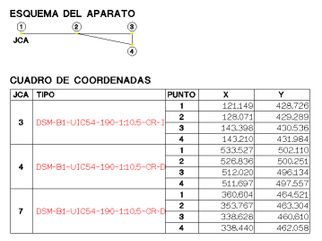
Örnek olarak kütüphanemizde APV.ali dosyası veya Brasil_APV.ali bulunmaktadır.
Yönetmelik
Kontrolü
Metin Tabloları
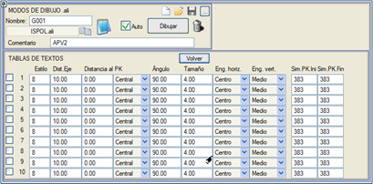
Bu
seçenekle, temsil edilecek tabloları etkinleştirerek ve her metnin
göreceli konumunu ve her bölümün başlangıç ve bitiş KM'lerinde bir
sembol tanımlayarak metin tablolarını planda etiketlemek mümkündür.
Başlangıçta
da belirttiğimiz gibi, .ali dosyaları düzenlenebilir. İçinde onu
oluşturan komutların her birini görebiliriz. Eksen numarasını, KM'yi,
yarıçapı, azimutu vb. etiketlemek için komutlar.
Bu dosyalar, kullanıcının ihtiyaçlarına göre değiştirebilmesi için
yorumlanmıştır. Böylece, dosyanın herhangi bir komutunu kullanmak
istemiyorsanız, ilgili satırları silmek veya daha iyisi, her satırın
başına # karakterini eklemek yeterlidir; bu, okunmamasını sağlar ancak kullanıcının orijinal durumunu istediği zaman geri yüklemesine olanak tanır. Bu dosyalara erişim, kütüphaneden doğrudan bir ASCII düzenleyici (Not Defteri gibi) ile veya PLAN veya BOYKESİT dikey menüsünün TABLOLARI DÜZENLE seçeneği aracılığıyla yapılabilir.
Bu aynı dosyalar, hedefi pafta çıktısı veya .dxf/.dwg veya
.dgn'e aktarım
olduğunda bir etiketleme hazırlamaya karar verildiğinde de
kullanılabilir; eksenlerin planını, uygun KM aralıklarını ve bunların
tanım verilerini çizmek için özel bir sistem mevcuttur.
ISTRAM®/ISPOL® tarafından kurulan temel kütüphane, farklı plan ekseni etiketleme modları içeren ve sürekli güncellenen veya eklenen birkaç .ali dosyasına sahiptir. Aşağıda bu dosyalardan bazıları ve diğer komutları içerenler detaylandırılmıştır:
Bolivia2.ali
|
Bu
dosya semboller ve STEP, SETP, SECP, SCEP, STCP ve SCTP komutlarını içerir. Bu komutlar, TE, ET, EC, CE, TC ve CT adlarını KM ile ve yarıçapın işaretine bağlı olarak eksenin bir tarafında etiketlemeye olanak tanır.
Tümü, diğerleri arasında Tekil
Noktalar: TE, EC, CE... alt menüsünde yer alır.
|
CHILE1.ali
|
Şili'de kullanılan özellikleri içerir, örneğin CHL komutu, eksenlerin somelerinin de çizilmesini ve etiketlenmesini sağlar.
|
CHILE2.ali
|
CHILE1.ali'ye göre bazı komut varyasyonlarıyla Şili'de kullanılan özellikleri içerir.
|
chile4_cp_D.ali
chile4_cp_I.ali |
Aliymanları
her zaman sağ tarafta veya her zaman sol tarafta, hatta kurpların
parametreleriyle birlikte saatleri de etiketlemek için. |
CLOTOID.ali
|
Amerikan
tarzına benzer, ancak her someye ek bilgi ve klotoidlerin verileriyle
birlikte açıklamalar ekler.
|
CODOS.ali
|
Boru hatları
için özel bir moddur ve dirseğin açıortayına yerleştirilen bir hücre
aracılığıyla, önceden belirlenmiş bir minimumdan daha büyük bir açıya
sahip dirseklerin KM'sini ve 2D açısını etiketlemek için AC komutunu kullanır.
|
CONSITRANS.ali
CONSITRANS2.ali
|
Romanya'da kullanılan özellikleri içerir (o ülkeye yönelik kütüphanede mevcuttur).
|
ELSAL1.ali
ELSAL2.ali
|
El
Salvador'da kullanılan özellikleri içerir. El Salvador için özel
yardımcı programları belirten ELS komutunu, teğetleri etiketlemek için STE,
SET, SEC, SCE, STC, SCT ve SKP komutlarını ve bu noktaların koordinatlarının bir tablosunu yapmak için TAB
komutunu içerir. Some sembolüne, some numarasını etiketlemeye olanak
tanıyan, S603 sembolünü uygun şekilde manipüle ederek, sahte kot olarak
some numarası atanır.
İkinci dosya, kurbun sapma açısının tamamlayıcı açısını grad cinsinden etiketlemeye olanak tanıyan TDdeltaS
(S işaret olmak üzere) komutunu içerir. Ayrıca, dairesel aliymanın
(klotoidsiz) somesini çizmek için bir çizgi tipi tanımlamaya olanak
tanıyan TLVC komutunu da içerir.
Elsal2.ali dosyasına iki yeni komut eklenir.
TDPI: Dairesel kurpsuz aliyman-aliyman sapma noktalarında da bir veri tablosu oluşturulması için.
TDPI_PK: Bu noktaların KM/Kesitini etiketlemek için.
|
ELSAL2_CEL.ali
ELSAL2C_CEL.ali |
Kurpların
veri tabloları için kutu olarak, ELSAL2.ali dosyası tarafından kullanılan
sembolü (S370) içeren bir hücre (C40) kullanır,
ancak farkı, bu tablo içinde yer alan değerleri etiketleyen tüm sembollerin, tablo
taşınırsa veya döndürülürse, tüm bu sembollerin de hareket edeceği şekilde hücreye bağlı kalmasıdır.
Bu aynı özelliğe sahip yeni hücreler oluşturmak için, diğer sembolleri
sürükleyecek olan yerleştirme noktası,
nokta başlığı tipinde olmalıdır. Bir sembolü bir hücreye bağlamak için,
özellikler kutusunda hücre numarasını belirtmek yeterlidir.
ELSAL2C_CEL.ali dosyası,
kurpların veri tabloları için kutu olarak, ELSAL2C.ali dosyası
tarafından kullanılan sembolü (S340) içeren bir hücre (C41) kullanır.
ELSAL2_CEL.ali'ye benzer, ancak sembollerin
yanı sıra hücreye bağlı metinler
de vardır.
Bir metni bir hücreye bağlamak için, özellikler kutusunda hücre numarasını belirtmek yeterlidir.
|
ESPA1.ali
|
İspanya'da kullanılan standart etiketleme modu.
Diğerlerinin yanı sıra, demiryolu eksenlerindeki makasları çizmeye olanak tanıyan LAV komutunu içerir.
|
ESPA1lon.ali
|
Öncekiyle
aynı, ancak aliymanları ALİYMAN kelimesi yerine uzunluklarıyla etiketler. Bunun için SRE komutunu kullanır.
|
ESPA2.ali
|
Her bir eksenin adının etiketlenmesini ekler.
|
ESPA2d.ali
|
ESPA2.ali gibidir, ancak kurpları sağ taraftan etiketler.
|
ESPA2di.ali
|
Bu
dosya, etiketleme sol taraftan yapıldığında KM, aliyman, yarıçap ve
klotoid parametresi notasyonları için farklı sembol ve konum kullanmaya
olanak tanıyan komutlar içerir (sırasıyla SPKI, SRE_I, SRA_I ve SAC_I komutları).
|
| ESPA2di_l.ali |
Bu
dosyanın özelliği, uzunluklarıyla tanımlanan klotoidleri, eksenin
solunda ve sağında farklı sembollerle etiketlemeye olanak tanıyan SAL_I komutunu kullanmasıdır.
|
ESPA2e.ali
|
ESPA2.ali gibidir, ancak kurpları dış taraftan etiketler.
|
ESPA2i.ali
|
ESPA2.ali gibidir, ancak kurpları sol taraftan etiketler.
|
ESPA3s.ali
|
Dairesel aliymanları işaretleriyle etiketler.
|
ESPA2ib.ali
|
Aliymanları,
parametre yerine klotoidlerin uzunluğunu yazarak etiketler. S450
sembolünü kullanır. Kullanılan SAL komutu, SI veya SD (sola veya sağa etiketlemek için) komutlarından etkilenir.
|
ESPA4.ali
|
Somelerde
dönülen açıyı grad cinsinden (VOmegaC komutu)
klotoid - kurp - klotoid bütünü için etiketlemeyi içerir, ancak bu
açının altmışlık derece cinsinden etiketlenmesi de mümkündür (VOmega komutu). Ayrıca şunları etiketlemeye olanak tanıyan diğer komutları da kullanır:
- Klotoidlerin (SRLA) ve dairesel kurpların (SRLR) uzunlukları, kendi orta noktalarında.
- Düşey kurpların giriş ve çıkış KM'leri (APE
ve APS) ve eğimleri (ATE ve ATS).
- Bölümün ortasındaki boykesit kırmızı kot eğimi (ATR).
- Ayrıca, someleri işaretlemek için kullanılan sembolü kişiselleştirmeye olanak tanıyan TSV komutunu da kullanır.
- Kurplardaki proje, tasarım ve özel hızlar (SRVP, SRVD ve SRVE).
- Düşey kurp somelerinin KM'si, numarası ve kotu (APV, ANV ve AZV).
- Önceki someden ve bir sonraki someye olan uzunluk (ALE ve ALS).
- Somede etiketlenen düşey kurpların uzunluğu (ALV).
- Somede etiketlenen KV değeri (AKV).
- Düşey kurpların giriş ve çıkış teğetlerinin KM'sindeki kırmızı kot kotu (AZE ve AZA).
- Önceki ve sonraki kırmızı kotun binde olarak eğimi (AME ve AMS).
- Demiryolu projelerinde dil ucu birleşim yerlerinin KM'si (JCAPK).
- Kurptaki makaslar durumunda J.C.A. - (Xv,Yv) - Topuk
çizgisi (LAV2), (Xv,Yv) dil ucu
birleşim yerindeki teğet ile ana hattın topuğundaki teğet arasındaki
kesişime karşılık gelen koordinatlardır.
- Matematiksel merkezde etiketlenen makas numarası (JCAAP).
- Matematiksel merkezle ilişkili bir sembol (JCACM).
- Sapan hattın topuğuyla ilişkili bir sembol (JCATD).
- Ana hattın topuğuyla ilişkili bir sembol (JCATP).
- Makasların sicil numarası (JCAM).
- Her bir hattın hat aralığına göre alçak rayın kotu ve belirli bir değerin katları olan KM'lerde (AZHB).
- Kurbun veya dairesel kurbun omega açısı, altmışlık derece cinsinden (SWS ve SOS sırasıyla) veya grad cinsinden (SWC ve SPC sırasıyla).
- Planın tekil noktalarındaki kırmızı kot kotu (AZS).
- C e00c formatındaki kurp numarası (SRMRB), burada e eksen numarası ve c kurp numarasıdır.
Örneğin C 5007, eksen 5'in 7. kurbuna atıfta bulunur.
- Kırmızı kotun ortasındaki kırmızı kot uzunluğu (ALR).
- Tünellerin ağzında bir sembol (AET, varsayılan olarak S292 sembolünü çizer).
- Viyadüklerin ortasında bir sembol (AEV, varsayılan olarak S293 sembolünü çizer).
espa4.ali dosyasına, dairesel kurbun ortasında etiketlemek için yeni komutlar eklenir:
- Dış mesafe.
- Giriş klotoidinin uzunluğu.
- Çıkış klotoidinin uzunluğu.
- Giriş alt teğeti.
- Çıkış alt teğeti.
- Toplam sapma açısı veya sadece dairesel kurbun açısı, altmışlık veya grad cinsinden.
|
ESPA1CEL_Inter.ali
|
Tekil
noktalar için bir hücre kullanır, böylece son
yerleştirme noktasını hareket ettirdiğinizde veya döndürdüğünüzde, o
tekil noktayla ilişkili KM, yarıçap, parametre vb. etiketleyen sembolleri de beraberinde sürükler.
ESPA1CEL_Inter.ali dosyasına
Kesit'i etiketlemek için komutlar eklenir.
|
GUATEM.ali
GUATE2.ali
|
Guatemala'da
kullanılan özellikleri içerir. Bu tablo, plan eksenlerinin nasıl
etiketlendiğini ve sonuç listelerinin nasıl oluşturulduğunu tanımlar.
S380, S381 ve S382 sembolleri bu özel Guatemala durumunda kullanılır.
Aliyman başlangıcını ve kurp başlangıcını etiketlemek için iki komut
belirir: SPPT ve SPPC.
Ayrıca, aliymanların uzunluğunu etiketlemek için SRL komutları ve
onların yönünü altmışlık derece, dakika ve saniye cinsinden etiketlemek
için SRG komutları etkinleştirilmelidir. Bu
yön, ceje.res listesindeki aliymanların azimutunun önüne de not edilir.
Ayrıca, someleri çizmek için çizgi tipini tanımlamak için TLV komutları ve saatleri yönlendirmek için OR komutları da belirir. OR komutu 4 değeri kabul eder:
- Saatler Kuzeye göre yönlendirilir.
- Açıortaya göre yönlendirilirler.
- Birleşik bir boykesit/plan paftalamasının alt sayfalarının yönelimine göre yerleştirilirler.
- Bir plan paftalamasının sayfalarının yönelimine göre yerleştirilirler.
|
MEXICO.ali
|
Meksika'da kullanılan özellikleri içerir.
|
NUMERO.ali
|
Bu
çizim modu yalnızca eksen numarasını ve aliymanların veri numarasını
etiketler. ND komutu,
aliymanların veri numarasını etiketlemeye olanak tanır.
|
PORTUG_2.ali
|
Portekiz'de kullanılan özellikleri içerir, aliyman-aliyman ve dairesel-dairesel etiketleme komutları ile.
|
PROCESL.ali
|
Eksen
adını hem başlangıçta (NE) hem de ortada ve eksenin
sonunda (NEm ve NEf) etiketlemeye olanak tanır.
|
TGV.ali
|
Fransız
konvansiyonlarından bazılarına uyum sağlayan demiryolları için özel
mod. YHT projelerinin etiketlenmesi için kullanılır.
|
Aşağıda bu dosyalardan bazıları ve bir kullanım örneği gösterilmektedir.
ESPA1.ali
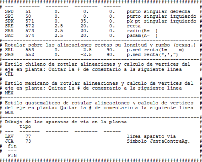
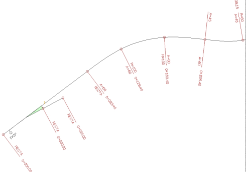
ESPA2.ali
ESPA1.ali gibidir, ancak eksen adlarının
etiketlenmesiyle.
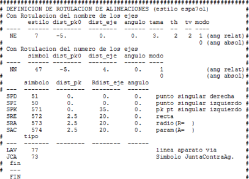
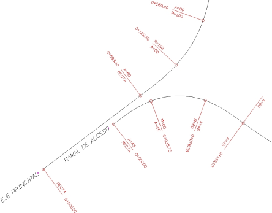
CHILE.ali
CHL komutunu içerir.
MEXICO.ali
MEX komutunu içerir.
Değiştirilmiş semboller kullanır.
GUATEM.ali
GUA komutunu içerir. KLOTOİDSİZ eksenler için geçerlidir.
GUATE2.ali
Somelerin koordinatlarını etiketlemek için XY komutunu içerir.
CLOTOID.ali
Güzergahta klotoidler olduğunda, Güney Amerika tarzında some etiketlemesi için.
ELSAL1.ali
ELSAL2.ali
Kurpların verileri için yapılandırılabilir bir veri tablosu tanımlama imkanı.
BOLIVIA2.ali
Some sembolüne, some numarasını etiketlemeye olanak tanıyan, S603 sembolünü uygun şekilde manipüle ederek, sahte kot olarak some numarası atanır.
TGV.ali
NUMERO.ali
CODOS.ali

|
Tüm bu dosyalar ve çok daha fazlası, hem program kütüphanesinde hem de \ispol\lib_ext klasörü içindeki sıkıştırılmış kütüphanelerde dağıtılmıştır. |
|